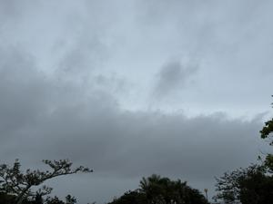
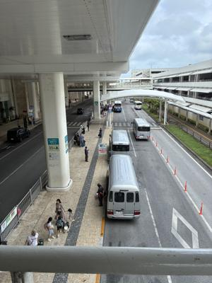
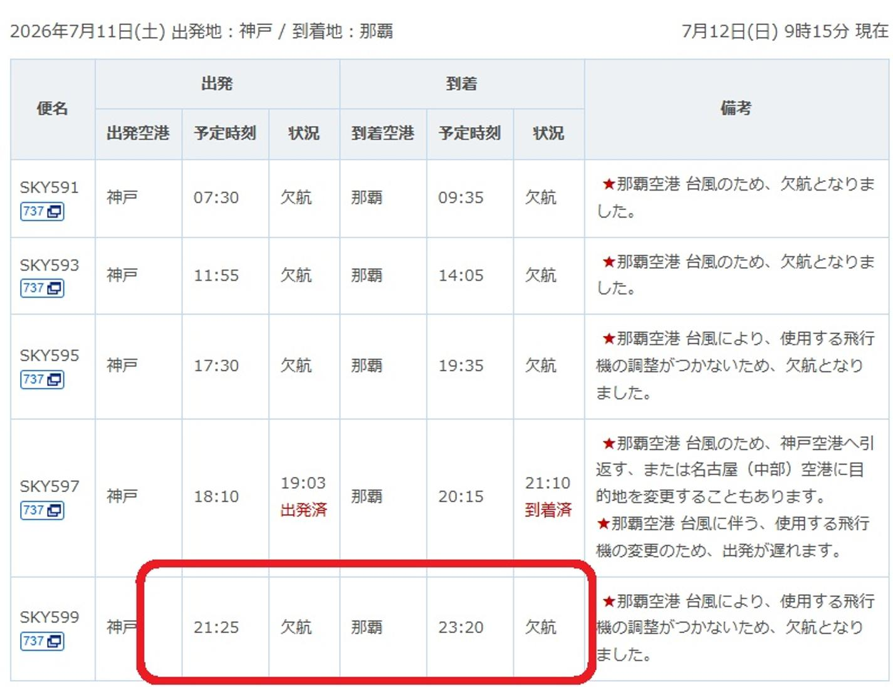
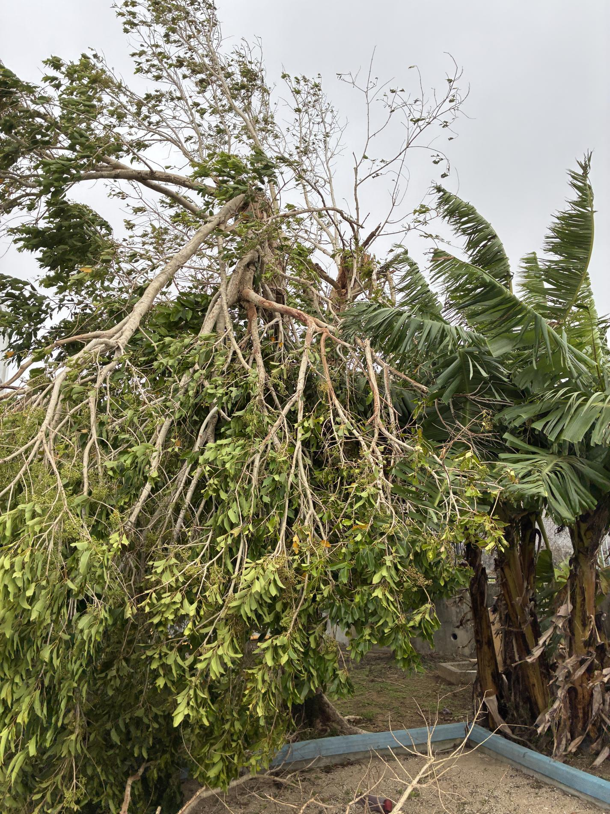

うるがいの話 ある日
最新: 台風９号のまとめ【うるがいの話 ある日】とは 一日だけのプログです
『うるがいの話』の最新一日だけのプログで、通信料が少なく経済的だ。カニの画像をクリックすると全ての日付が載る『うるがいの話』サイトを表示します
|
|
【うるがいの話】 うるがい(ｳﾙｶﾞｲ urugai)とは、『もずくがに』の名前でとても大きくなります。 |
|---|---|
|
|
【カミマヤーの話】 猫のことを方言でマヤーといいます。カミマヤー（kamimayaa）とは、神の猫のことです。 |
|
【たながぁの音楽】 たながぁ（ﾀﾅｶﾞｰ tanagaa）とは手長えびのことで、何種類かあり大きいのは車 エビぐらいになります。 |

|
【ぶながぁの話】 ぶながぁ(ﾌﾞﾅｶﾞｰ bunagaa)とは、赤い髪の毛、赤い身体、そして身長は１ｍ２０ｃｍ ぐらい、川の蟹を食べているの目撃された。場所は沖縄県国頭郡大宜味村のと ある村僕の隣近所に住んでいる爺さんから、聞いた話です。 |
|
|
【ギーマの話】 ギーマ(giima)とは、山原の里山に咲くスズランに似た、 花を付けます。実は食べられます、 気が付くと口の周りが紫になっています。 |
2026年07月12日 (日）台風９号のまとめ
16:02

一泊が、三泊になった。最悪は四泊も覚悟していた。運よく、今
日の飛行機が取れた。と、コドモが呟いた。

運航状況を眺めていると、コドモがのる最終便が、欠航で前の飛
行機が飛んでいる。機材の都合だけど、納得しない人もいるだろ
う。マ、格安もあるからとコドモの意見。

昨日ジョギングへいくと公園の木が、無惨にも折れていました

まとめ
【台風９号】暴風警報３１時間 宮古・石垣など停電２．７万戸
けが１２人、久米島風速４５メートル
台湾電力公司の発表によると、現地時間１１日、台湾・桃園市、
高雄市、台中市などで台風９号による大規模な停電が発生しまし
た。
宮古・石垣より、久米島の風速が高い！。台風はあまり、影響し
ないと言っていた子供、金曜日は仕事は休みになったとラインに
書き込んでいた。今日も、風が強い、あまり経験したことのない
大型台風だった。８年前の出来事を思い出す。
台風２４号